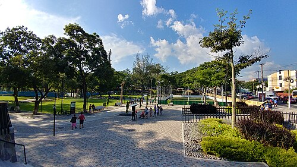
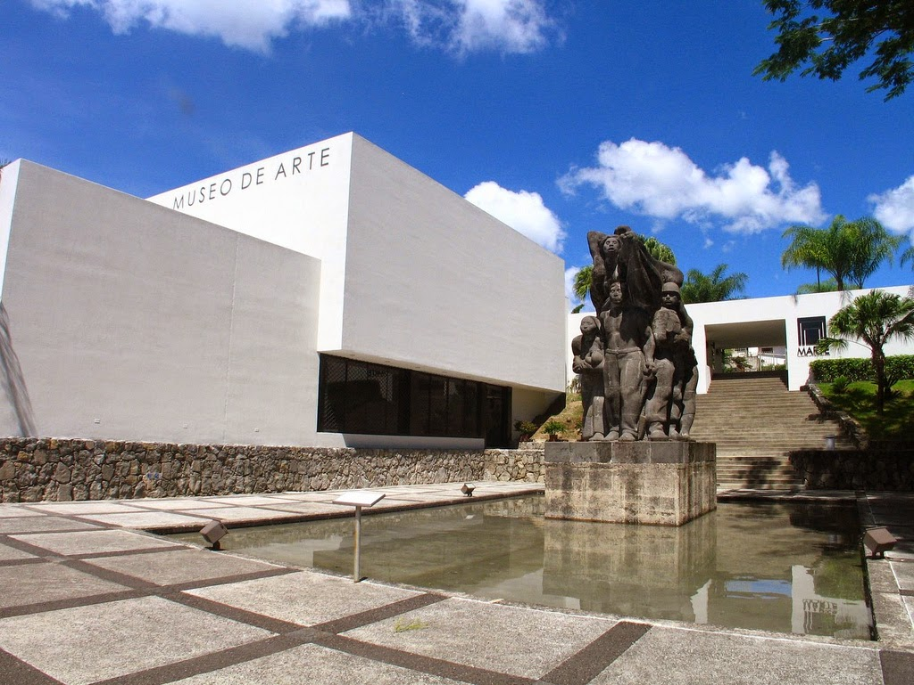
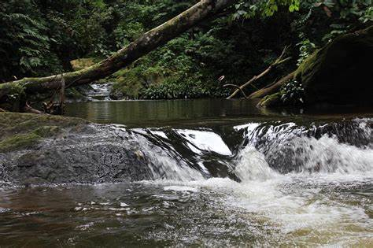
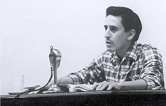

MAPA DE SAN SALVADOR

Información
San Salvador es el departamento más importante de El Salvador, tanto en términos económicos como culturales. Su cabecera es la ciudad de San Salvador, la capital del país, que es el centro político, comercial y cultural de El Salvador. El departamento es conocido por su dinámica vida urbana, parques, museos y su cercanía a áreas naturales como el Parque Nacional El Boquerón.

Datos Históricos
San Salvador fue fundada el 1 de abril de 1525 por el capitán español Ildefonso de Girón. A lo largo de la historia, la ciudad ha sido un centro estratégico para el comercio y la política. En la época colonial, San Salvador fue la sede de una audiencia española y se convirtió en el núcleo de la vida política del país.

Lista de Municipios
- Aguilares
- Apopa
- Ayutuxtepeque
- Cuscatancingo
- Ciudad Delgado
- El Paisnal
- Guazapa
- Ilopango
- Mejicanos
- Nejapa
- Panchimalco
- Rosario de Mora
- San Marcos
- San Martín
- San Salvador (cabecera)
- Santiago Texacuangos
- Santo Tomás
- Soyapango
- Tonacatepeque
Centros Turísticos
En San Salvador se destacan varios puntos turísticos, entre ellos el Parque Nacional El Boquerón, donde se encuentra el cráter del volcán de San Salvador. Otro sitio famoso es el Centro Histórico de la ciudad, con sus museos, plazas y la Catedral Metropolitana. El Parque Cuscatlán también es un lugar popular para paseos y actividades recreativas.

Centros Turísticos
El Parque Cuscatlán está localizado en la ciudad de San Salvador, El Salvador. El área comprende sitios de interés como el Museo Tin Marín, la Sala Nacional de Exposiciones "Salarrue" y el Monumento a la Memoria y la Verdad.
Centros Turísticos
El Museo de Arte de El Salvador (MARTE), localizado en la ciudad de San Salvador, es una institución privada sin fines de lucro cuyo funcionamiento es responsabilidad de la Asociación Museo de Arte de El Salvador. Su objetivo es contribuir al desarrollo educativo y cultural del país mediante la conservación y difusión del arte salvadoreño
Lagos
Uno de los principales lagos de la zona es el Lago de Ilopango, ubicado en el oriente de la ciudad. Es un embalse natural creado por el volcán de Ilopango. El lago es popular por actividades recreativas como paseos en bote y observación de aves.

Ríos
Río Las Cañas es un arroyo en Departamento de San Salvador, El Salvador. Río Las Cañas se encuentra cerca de la localidad,de El Bonete, así como de Camotepeque.Departamento de San Salvador, El SalvadorEl Río Las Cañases un arroyo, en Departamento de San Salvador, El Salvador Atraviesa los municipios de Soyapango, Ilopango, San Martín, Tonacatepeque,Ciudad Delgado y Apopa, conectando con el río Acelhuate 2 . El agua es turbia ydespide , un hedor debido a la liberación de aguas negras
Volcanes
El volcán de San Salvador, también conocido como El Boquerón, es el volcán más cercano a la ciudad. Este volcán es famoso por su cráter y el Parque Nacional El Boquerón, que ofrece vistas espectaculares de la ciudad y el paisaje, circundante. A lo largo de la historia, el volcán ha tenido varias erupciones, siendo la última en 1917.

Personajes Célebres
Roque Antonio Dalton García (San Salvador, 14 de mayo de 1935-San Salvador, 10 de mayo de 1975), registrado al nacer como Roque Antonio García y conocido como Roque Dalton, fue un poeta, ensayista, periodista, activista político e intelectual salvadoreño..
